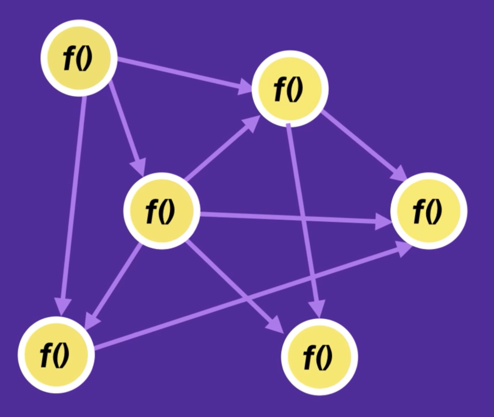
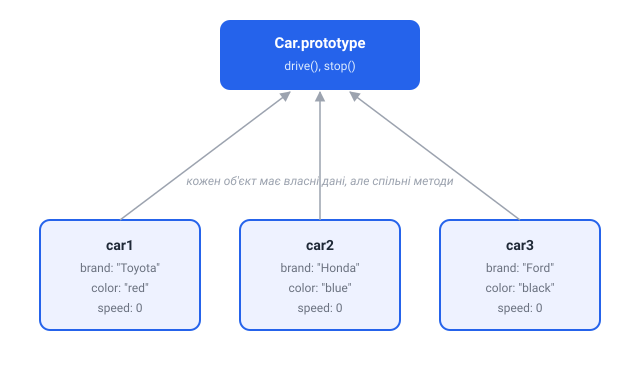
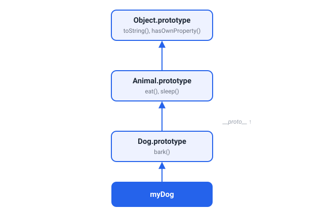

1. Вступ
Процедурне програмування — збірка не пов'язаних явно функцій і змінних для зберігання й обробки інформації. Цей підхід простий і прямолінійний, але при зростанні кодової бази, результатом може бути те, що називається spaghetti code
- тісно пов'язаний код.

Нижче маємо процедурний код, не пов'язані змінні й функція для підрахунку результату.
const baseSalary = 30000;
const overtime = 10;
const rate = 20;
const getWage = (baseSalary, overtime, rate) => {
return baseSalary + overtime * rate;
};
getWage(baseSalary, overtime, rate);
Об'єктноорієнтоване програмування (ООП) — методологія, заснована на поданні програми у вигляді сукупності об'єктів, кожен з яких містить дані (властивості) і методи для взаємодії з ними.

Використовуємо ООП зібравши дані в об'єкт employee.
const employee = {
baseSalary: 30000,
overtime: 10,
rate: 20,
getWage() {
return this.baseSalary + this.overtime * this.rate;
},
};
employee.getWage();
При такому підході у методу немає параметрів, використовуються властивості об'єкта, які налаштовуються при створенні об'єкта і можливо так само змінюються іншими методами. На виході маємо сутність з простим інтерфейсом, що знижує складність програми та підвищує повторне використання коду в інших частинах програми.
Ідеологічно, ООП це підхід до програмування як до моделювання, вирішуючи основне завдання - структурування інформації з точки зору керованості, що істотно покращує контроль процесу моделювання. Це вкрай важливо при реалізації великих проєктів.
2. Основні поняття ООП
Уявіть собі, що ми проєктуємо автомобіль. У нього буде двигун, чотири колеса, бензобак і т. д. Автомобіль повинен мати можливість заводитися, набирати й зменшувати швидкість. Ми знаємо як взаємодіє двигун і колеса, тобто згідно з якими законами взаємодіють різні частини машини.
2.1. Клас
Ми описуємо всі запчастини з яких складається автомобіль, то яким чином ці запчастини взаємодіють між собою і що має зробити водій, щоб машина загальмувала, включилися фари й інше. Результатом нашої роботи буде деякий ескіз (шаблон, схема). Ми тільки що розробили те, що в ООП називається клас.
Клас — спосіб опису суті, визначає стан і поведінку, залежне від цього стану, а також правила для взаємодії з даною сутністю (контракт).
У нашому випадку, клас визначає сутність - автомобіль. Властивостями класу будуть двигун, колеса, фари і т. д. Методами класу будуть відкрити двері, завести двигун, збільшити швидкість і т. п.
2.2. Об'єкт
Ми спроєктували креслення, і машини, розроблені за ним, сходять з конвеєра. Кожна з них точно повторює креслення, всі системи взаємодіють саме так, як ми спроєктували, але кожна машина унікальна. Вони всі мають номер кузова і двигуна, але всі номери різні, автомобілі розрізняються кольором, оздобленням салону. Ці автомобілі є екземплярами класу.
Об'єкт (екземпляр) — це окремий представник класу, який має конкретний стан і поведінку, повністю визначається класом. Це те, що створено за кресленням, тобто за описом з класу.
Говорячи простою мовою, об'єкт має конкретні значення властивостей і методів, що працюють з цими властивостями на основі правил, заданих в класі. В даному прикладі, якщо клас це деякий абстрактний автомобіль на кресленні, то об'єкт - це конкретний автомобіль, що стоїть у нас під вікнами.
2.3. Інтерфейс
Коли ми підходимо до автомата з кавою або сідаємо за кермо автомобіля, існує деякий набір елементів управління, з якими ми можемо взаємодіяти.
Інтерфейс — це набір властивостей і методів класу, доступних для використання при роботі з екземпляром.
По суті, інтерфейс специфікує клас, чітко визначаючи всі можливі дії над ним. Хороший приклад інтерфейсу - приладова панель автомобіля, яка дозволяє зателефонувати за такі методи як збільшення швидкості, гальмування, поворот, перемикання передач, включення фар і т. п.
При описі інтерфейсу класу дуже важливо дотримати баланс між гнучкістю і простотою. Клас з простим інтерфейсом буде легко використовувати, але будуть існувати завдання, які за допомогою нього вирішити буде не під силу. Якщо інтерфейс буде гнучким, то швидше за все, він буде складатися з досить складних методів з великою кількістю параметрів, які будуть дозволяти робити дуже багато, але його використання буде пов'язане з великими труднощами й ризиком припуститися помилки, щось переплутавши.
3. Парадигми
ООП побудовано на чотирьох основних поняттях: інкапсуляція, абстракція, успадкування та поліморфізм.
3.1. Інкапсуляція
Внутрішні процеси роботи автомобіля досить складні. Але всі ці дії приховані від користувача і дозволяють йому крутити кермо і натискати на педаль газу, не замислюючись, що в цей час відбувається всередині. Саме приховування внутрішніх процесів, що відбуваються в автомобілі, дозволяє ефективно його використовувати навіть новачкам. Це і є інкапсуляція.
Інкапсуляція (encapsulation) — це властивість системи, що дозволяє об'єднати дані й методи, що працюють з ними, в класі й приховати деталі реалізації від користувача.
Інкапсуляція нерозривно пов'язана з поняттям інтерфейсу класу. Все те, що не входить в інтерфейс, інкапсулюється (приховано) в класі. Користувач може працювати з усім функціоналом через інтерфейс, не замислюючись над тим, як реалізований функціонал.
3.2. Абстракція
Уявіть, що водій їде в автомобілі по жвавій ділянці руху. Зрозуміло, що в цей момент він не буде замислюватися про хімічний склад фарби автомобіля, особливості взаємодії шестерень в коробці передач або впливу форми кузова на швидкість. Однак, кермо, педалі, покажчик повороту він буде використовувати регулярно.
Абстрагування (abstraction) — це спосіб виділити набір значущих характеристик об'єкта, виключаючи з розгляду незначущі.
3.3. Спадкування
Уявімо, що інженерам поставили завдання розробки й випуску модельного ряду більш сучасних автомобілів. При цьому у них вже є стара модель, яка відмінно зарекомендувала себе. Очевидно, що інженери не будуть проєктувати новий автомобіль з нуля, а взявши за основу попереднє покоління, внесуть низку конструктивних змін.
Всі модифікації матимуть більшість властивостей колишньої моделі. При цьому кожна з моделей буде реалізувати деяку нову функціональність або конструктивну особливість. В цьому випадку, ми маємо справу зі спадкуванням.
Спадкування (inheritance) — це властивість системи, що дозволяє описати новий клас на основі вже існуючого, з частково або повністю запозичує функціоналом. Клас, від якого виробляється спадкування, називається базовим, батьківським або суперкласом. Новий клас називається нащадком, спадкоємцем або похідним класом.
Якщо взяти приклад з життя, у нас є HTML-елементи. У наступних модулях ми дізнаємося що всі вони представлені об'єктами. У них є спільні властивості й методи для управління станом. Замість того щоб додавати загальні властивості на кожен тип елемента, ми можемо описати їх в класі HTMLElement, і ті елементи, яким потрібен подібний інтерфейс, можуть наслідувати від HTMLElement. Спадкування допомагає зменшити обсяг повторюваного коду.

3.4. Поліморфізм
Будь-яке навчання водінню не мало б сенсу, якби людина, яка навчилася водити, скажімо, Audi не міг потім водити BMW або будь-який інший автомобіль. З іншого боку, можна уявити керування автомобілем використовуючи джойстик або мишку з клавіатурою, а поведінка автомобіля буде ідентичною, як би використовували кермо.
Вся річ у тім, що основні елементи управління автомобіля мають одну і ту ж конструкцію і принцип дії. По суті, можна сказати, що всі автомобілі мають один і той же інтерфейс, а водій, абстрагуючись від сутності автомобіля, працює саме з цим інтерфейсом. Незалежно від того, яким чином буде реалізовуватися рух і внутрішнє функціонування машини, інтерфейс залишиться колишнім.
Поліморфізм (polymorphism) — це властивість системи дозволяє використовувати об'єкти з однаковим інтерфейсом без інформації про тип і внутрішню структуру об'єкта. Дозволяє перевизначати в класах спадкоємців реалізації методів базового класу.